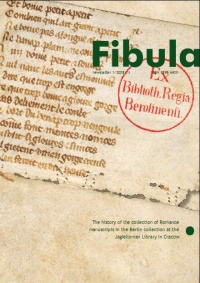
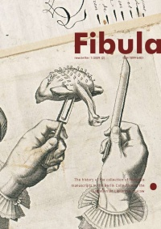
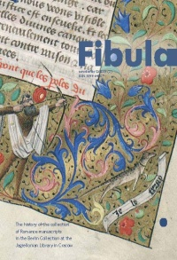

Newsletter
Grupa badawcza Fibula począwszy od jesieni 2008 roku wydaje newsletter poświęcony rękopisom romańskim kolekcji berlińskiej przechowywanym w Bibliotece Jagiellońskiej. Newsletter, wydawany po angielsku, poświęcony jest aspektom kodykologicznym, historycznym oraz filologicznym rękopisów. Artykuły dotyczą zarówno pojedynczych manuskryptów jak i ich grup, tematycznie lub historycznie powiązanych. Autorami tekstów w newsletterze są członkowie grupy Fibula uczestniczący w realizacji projektu.
|  |  |  |
 |
 |
 |